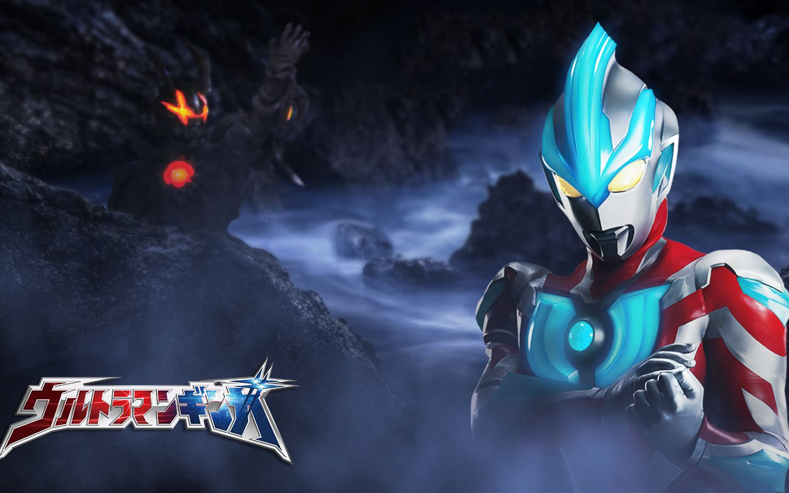

热门介绍选区
动漫区
---铃芽之旅---

简介:
《铃芽之旅》是由新海诚执导并编剧，CoMix Wave Films负责制作的动画电影，于2022年11月11日在日本上映 ，并于2023年3月2日在中国港澳台地区上映，于2023年3月24日在中国内地上映 。
影片讲述的是17岁的少女铃芽与“闭门师”草太相遇，两人一起去关闭灾难源头之门的冒险故事。
更多了解>>---天气之子---
简介:
《天气之子》是由新海诚执导、Comix Wave Films负责制作的原创动画电影，该片讲述了少年帆高与拥有操控天气超能力的少女阳菜之间的奇幻爱情故事 。
该片于2019年7月19日在日本上映；中国香港由安乐影片有限公司代理，于2019年8月8日上映；中国台湾由车库娱乐股份有限公司代理，于2019年9月12日上映；中国内地由华夏电影发行有限责任公司发行，北京光线影业有限公司协助推广，长影集团译制片制作有限责任公司译制，于2019年11月1日上映；中国内地于2020年7月21日上线，其中bilibili的日语版为蓝光光碟片源，字幕与影院不同。
更多了解>>假面骑士区
---假面骑士零一---
简介:
舞台为迎向新时代的日本。人工智能的龙头企业“飞电智能”所开发的人形AI机器人“人机偶”的运行正式开始启动。“人机偶”其制作地精致到与人类差异不大，因而易于融入各行各业职场。
另一方面对这种良好状况不认同的恐怖组织“灭亡迅雷.net”，将人机偶骇入使其失控，企图消灭人类。然而政府早已查知他们的行动，并设立直属于内阁官方的对人工智能特务机关“A.I.M.S.”。目的在于镇压失控的AI机器人与维持治安…
更多了解>>---假面骑士Decade---
简介:
假面骑士Decade，是日本特摄剧《假面骑士Decade》中登场的主角假面骑士。基本色调为品红，复眼的颜色为绿色。标志类似于条形码。被称为“破坏所有骑士的存在”、“一切事物的破坏者”、“世界的破坏者”、“恶魔”等等。
口头禅为“一位路过的假面骑士罢了，给我记住了。”
更多了解>>奥特曼区
---银河奥特曼---
简介:
银河奥特曼，圆谷特摄剧《银河奥特曼》系列的主人公。来自未来的奥特曼，使用闪耀的等离子能量发挥出惊人力量的新世代奥特英雄。
银河奥特曼平时将本体以人偶状态隐藏在银河火花里，当充满勇气的心与银河奥特曼相呼应时，主人公礼堂光即与银河奥特曼一体化，现出巨大化的身姿。自身也有意识，能脱离人间体的存在而活动；通常情况下战斗时间为3分钟，在遭遇危机时都会与礼堂光分离
更多了解>>---奥特曼艾克斯---
简介:
艾克斯奥特曼，日本特摄《奥特曼》系列及其衍生作品中的角色，特摄剧《艾克斯奥特曼》的主人公，平成系新世代奥特曼之一。来自于未知领域，与地球上的XIO实验室队员大空大地一体化，保护地球的和平
更多了解>>